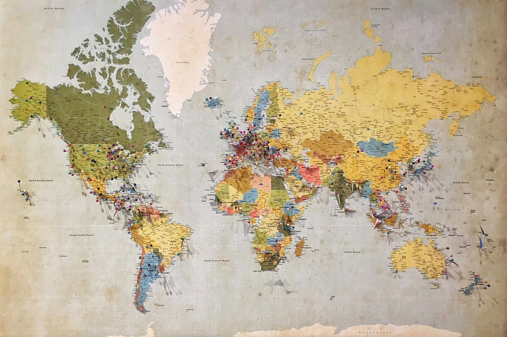

Hobby's & Interesses
Technologie
Nieuwe tools, AI en software interesseren me. Ik besteed veel vrije tijd aan het uitproberen van kleine scripts en het lezen van tech-blogs. Dit helpt me om concepten die ik op school leer, praktisch toe te passen. Ik experimenteer vaak met kleine Python-scripts en eenvoudige front-end toepassingen.
Geopolitiek & Geschiedenis
Ik vind het belangrijk om te begrijpen hoe internationale relaties en historische gebeurtenissen samenhangen met de hedendaagse wereld. Dit verruimt mijn blik en helpt bij kritisch denken.
Het bestuderen van bronnen en rapporten is ook nuttig voor onderzoeksvaardigheden: bronnen verifiëren, notities maken en argumenten structureren —> allemaal vaardigheden die ik kan vertalen naar analytisch werk in IT-projecten.
Creatieve hobby's
Naast technologie besteed ik tijd aan creatieve bezigheden zoals grafisch ontwerpen in Figma, het maken van eenvoudige visuals en het schrijven van korte teksten of scripts voor video's.
Door mijn creativiteit is mijn werk niet alleen functioneel maar ook aantrekkelijk voor gebruikers.
Activiteiten
- Experimenteren met kleine webprojecten
- Lezen van artikelen over geopolitiek en geschiedenis
- Design en mockups in Figma


Interesses samenvatting
| Hobby | Wat ik leer |
|---|---|
| Webdevelopment | Praktische front-end skills, responsive design |
| Geopolitiek lezen | Analyse, kritisch denken en onderzoeksvaardigheden |
Slotwoord
Dank je voor het bekijken van mijn interesses. Wil je over een onderwerp praten of samenwerken aan een project? Neem contact op via de contactpagina.